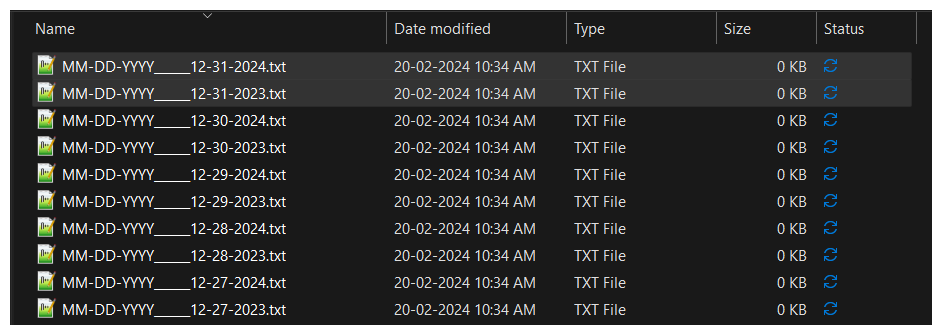
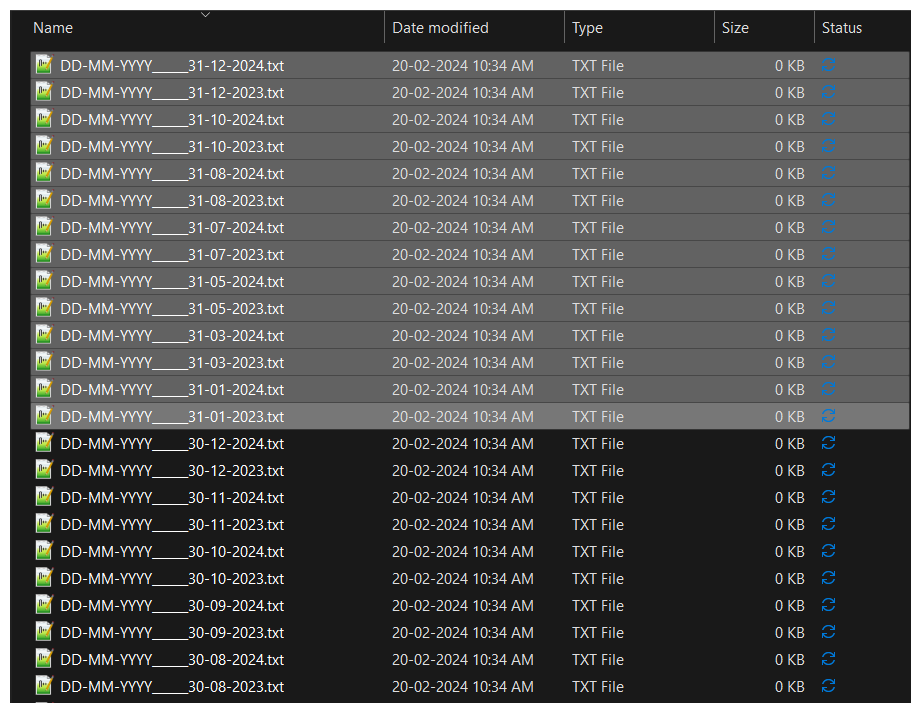
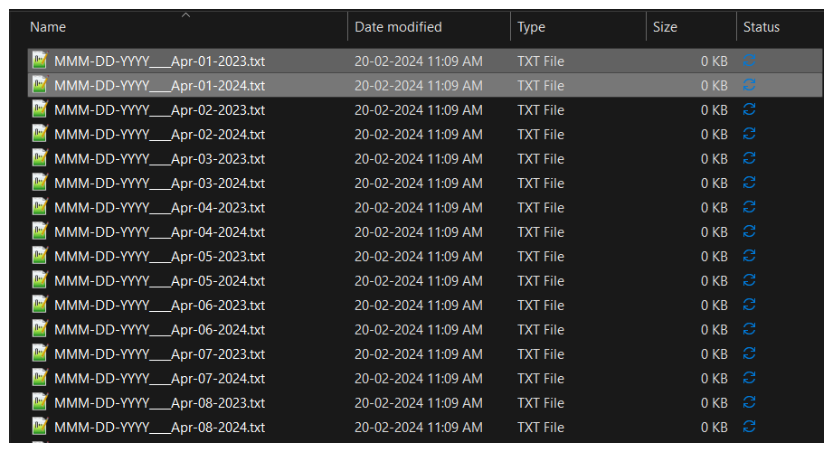
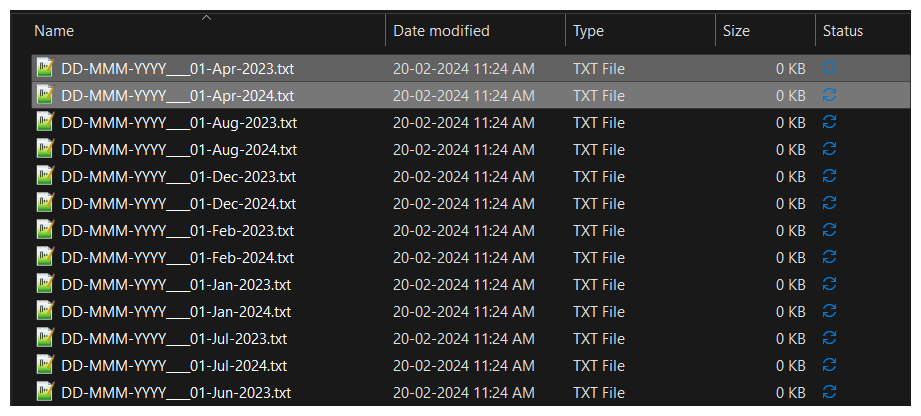
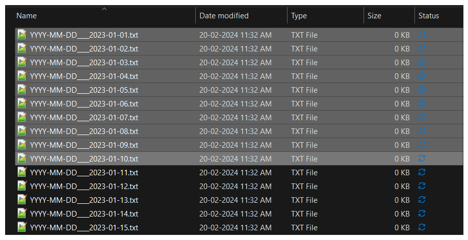
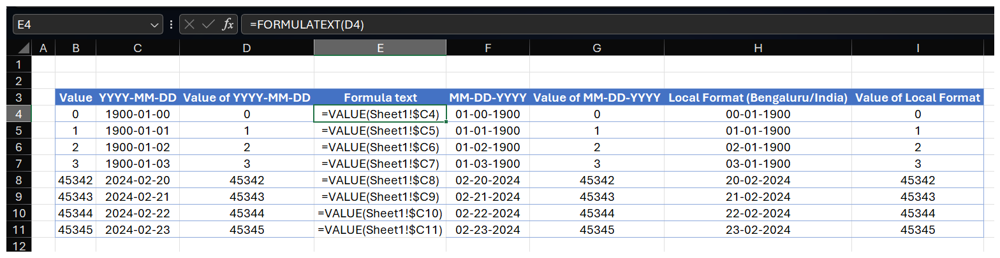

Intro

Dates are everywhere!!! They appear in documents, digital displays, our phones and conversations. In day-to-day life, outside of work, most of us are usually aware of which month and year is going on. However, at work, for communication, file-management, meeting scheduling, reporting, especially with International clients and MNCs, choosing the right date format can make a significant difference in clarity, consistency, and ease of use. Among various formats like MM/DD/YYYY, DD/MM/YYYY, and others, the YYYY-MM-DD format stands out as the best choice. While some might argue it’s just a matter of preference, there’s actually a strong case for one format reigning supreme.
Ambiguity and Confusion
Formats like DD/MM/YYYY and MM/DD/YYYY cause confusion, especially in Orgs. that operate across geographies and multi-national companies (MNC) At a smaller scale, individual gig-workers working with MS Excel files from different clients get confused if the date format is different.

The YYYY-MM-DD format follows a logical order: Year, > Month > Day, from largest to smallest unit. The logic is similar to geographical hierarchy i.e. Earth (Planet) > Asia (Continent) > India (Country) > Karnataka (State) > Bengaluru (City). Largest to Smallest!
This logical structure ensures clarity and consistency in understanding dates across different cultures and languages. For instance:
January 31, 2024 is represented as 2024-01-31. The sequence is intuitive and unambiguous, reducing the risk of misinterpretation.
In contrast, formats like MM/DD/YYYY or DD/MM/YYYY can lead to confusion, especially in international communication. For example, 02/03/2024 can mean February 3rd or March 2nd, depending on the chosen format, leading to potential errors.
Sorting and Organization
The YYYY-MM-DD format facilitates sorting dates effortlessly, both alphabetically and chronologically. Whether it’s arranging files on a computer, organizing data in spreadsheets, or storing information in databases, the YYYY-MM-DD format simplifies the process.
Alphabetical sorting aligns with chronological order, making it easier for computers and humans to process information consistently.
Other formats may pose challenges in sorting, especially when combining different date formats within the same dataset. Ambiguities arise, leading to errors and confusion during analysis.
Sorting is done based on the Alphabetical order of the characters in the filenames. Let’s evaluate each format on the basis of sorting.
The MM-DD-YYYY format in filenames pulls Month and Days for different years together.

DD-MM-YYYY format in filenames pulls the days together for all months and years. This is worse than MM-DD-YYYY in this case!

Month Names cause bigger problems due to Alphabetical ordering. Shows all days of April first followed by all days of August, December, February and so on...

Month Names cause bigger problems due to Alphabetical ordering. Shows same day of April first followed by same of August, December, February and so on...

YYYY-MM-DD gives the best sorting as per chronological order. No other format gives this order.

Compatibility and Standardization
YYYY-MM-DD format is widely recognized and accepted in various industries, including technology, finance, and healthcare. Its standardized nature promotes interoperability and data exchange across different systems and platforms.
Many programming languages like and , databases, and software applications prefer the YYYY-MM-DD format for date handling and manipulation. This consistency streamlines development and integration processes. International standards bodies like ISO (International Organization for Standardization) endorse the YYYY-MM-DD format (ISO 8601), further solidifying its status as a global standard.
But, I only work in Microsoft’s Excel!! How does this matter?
Well, you are right!
Spreadsheet applications like MS Excel store Dates as numbers behind the scenes and display them as per the system’s Locale. An Excel file containing Dates (formatted as proper Dates, not dates stored as Text!!! 😱 ) will change the date format accordingly because the underlying number doesn’t change. However, at one glance, it is not possible to guess if a date-like text is a proper Date or Text. Dates stored as text will not change as per system’s Locale and hence may cause errors in calculations and sorting issues. While the YYYY-MM-DD format will resolve sorting issues (due to its inherent alphabetical order) even if stored as text, calculation errors will still occur if dates are stored as text.

Exploring date-related horrors in MS Excel is a topic for a whole other post, which will come soon!
Incidents
While there might not be a single major incident directly caused by unambiguous date formats, the lack of standardized date formats has contributed to numerous misunderstandings, errors, and inefficiencies in various contexts. Here are a few examples:
Y2K Bug: One of the most well-known incidents related to date formatting issues is the Y2K (Year 2000) bug. Many computer systems used a two-digit representation for the year, assuming the first two digits were “19” by default (e.g., “98” for 1998). As the year 2000 approached, there was concern that these systems would interpret “00” as 1900 instead of 2000, potentially causing malfunctions or system failures. While not directly caused by unambiguous date formats, the Y2K issue highlighted the importance of standardized and unambiguous date representations in computer systems.
Medical Errors: In healthcare settings, incorrect interpretation of dates can lead to medical errors, missed appointments, and treatment delays. For example, confusion between MM/DD/YYYY and DD/MM/YYYY formats could result in misinterpreting appointment dates, prescription refills, or test results, potentially compromising patient care and safety.
Financial Transactions: In the financial sector, accurate date representations are crucial for transactions, accounting, and regulatory compliance. Ambiguous date formats can lead to errors in financial reporting, billing, and tax calculations, causing financial discrepancies and regulatory violations.
Legal Documents: Ambiguous date formats in legal documents such as contracts, agreements, and court filings can lead to disputes, legal challenges, and contract breaches. Inconsistencies in date interpretation may affect the validity and enforceability of legal agreements, resulting in costly litigation and legal proceedings.
Closing
While these incidents may not be directly attributed to unambiguous date formats, they underscore the importance of standardized date representations in ensuring accuracy, clarity, and interoperability across different systems, industries, and domains. Standardized date formats, such as those defined in ISO 8601, help mitigate the risk of errors, misunderstandings, and disruptions caused by inconsistent date representations, promoting efficiency, reliability, and trust in data exchange and communication.
While it is highly doubtful that this article says anything new compared to already existing literature, the switch to using YYYY-MM-DD format consistently is a small step towards a more inclusive and unambiguous system of time-keeping!
Guess, I woke up and chose violence today!
References
Reuse
Citation
@online{katti2024,
author = {Katti, Vishal},
title = {Beyond 01/31/2024},
date = {2024-02-20},
url = {https://vishalkatti.com/posts/date-format/},
langid = {en},
abstract = {This post talks about the superiority of ISO 8601 Date
format and why it matters in our day-to-day life.}
}